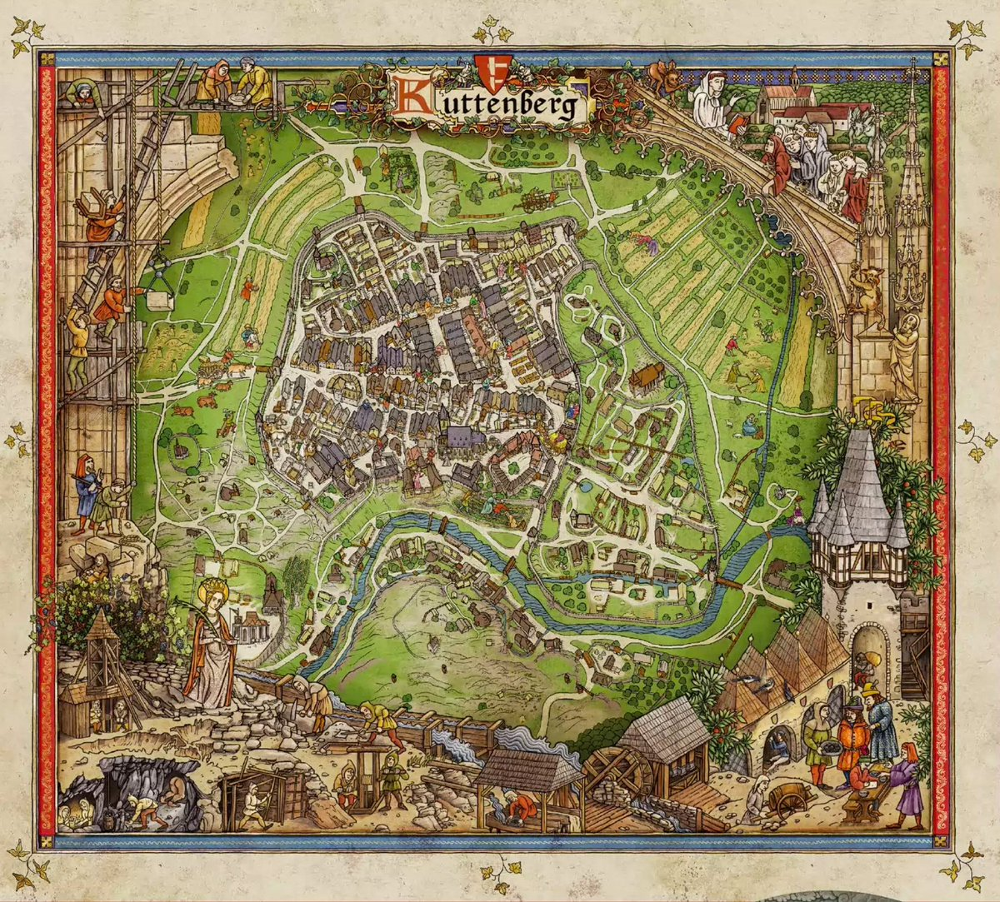

Куттенберг — центральне місто гри Kingdom Come: Deliverance II. Тут проходять ключові події сюжету та розташовані головні торгові площі, замки та ремісничі майстерні. Місто оточене річками та лісами, а його історична архітектура створює унікальний колорит середньовічної Богемії.
Куттенберг

Центральне місто гри
🏰 Замок та укріплення
Потужні фортифікаційні споруди забезпечують захист міста
🛍️ Торгові площі
Центр торгівлі з унікальними товарами та ресурсами
⚒️ Ремісничі квартали
Майстерні ковалів, зброярів та інших ремісників
⛪ Історичні будівлі
Собори, ратуша та інші архітектурні пам'ятки